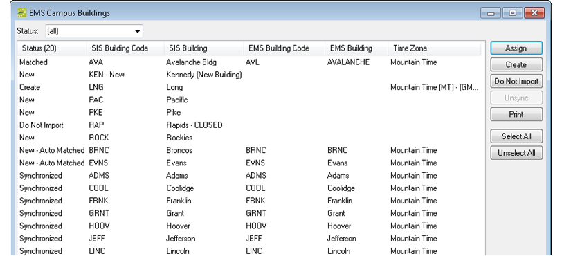
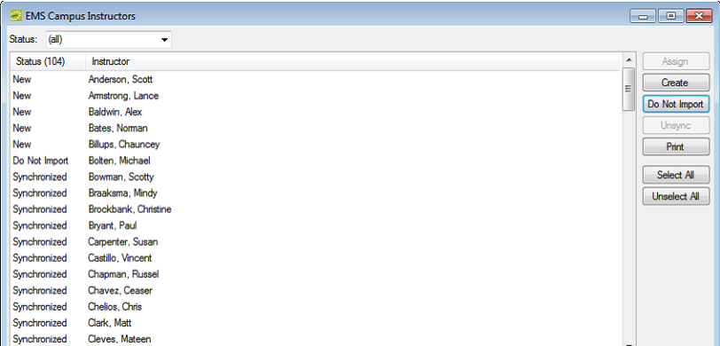

Overview of Synchronization
Your Student Information System, or SIS, contains a wealth of information about your buildings, room types, rooms, instructors, course types, subjects, and terms. The process of importing this SIS data into your EMS database is referred to as synchronization. When you import campus-specific data (instructors, course types, subjects, and terms), you create the data items in your EMS database. When you import facility data (buildings, room types, and rooms), you must either create the data items in your EMS database, or if the facility data already exists in your EMS database, then you must link the SIS facility data to the corresponding facility data in your EMS database.
Before you can carry out synchronization, the EMS Campus Web Service must be installed and configured. Refer to the EMS Installation instructions for details.
Facility Data Synchronization
When you import facility SIS data, the actions that you must carry out are different if you do not have the facility data (building, room type, or room) already configured in your EMS database versus if you do have the data already configured. See also: Synchronize Facility Data.
- If you have not configured the necessary data items in your EMS database, then all data items that are imported from your SIS are flagged with a status of New. To configure these items in your EMS database, you must select the item and then click Create. (Depending on the item that you select, another window might open with additional configuration options that are required to completely configure the item in your EMS database.) For example, in the graphic below, the PAC-Pacific building, the PKE-Pike building, the ROCK-Rockies building, and the LNG-Long building exist in the SIS, but not in the EMS database. The status of the PAC-Pacific building, the PKE-Pike building, the ROCK-Rockies building is therefore set to New. The status of the of the Long building was set to Create by selecting the building, and then clicking Create.

- If you have configured the necessary data items in your EMS database, and you have named and/or coded them consistently between your EMS database and your SIS, then these data items are automatically matched and flagged with a status of New—Auto Matched. For example, in the graphic above, the Evans building and the Broncos building were configured in the EMS database prior to synchronization. Because the Evans building was named and coded identically as the same building in the SIS, EMS auto-matched the record for this building. Even though the Broncos building was named differently, it was coded identically as the same building in the SIS, and therefore, it was auto-matched as well.
Auto-matching can occur only if each SIS facility data item can be matched to one and only one EMS data item. For example, if Softball Field and Soccer Field are separate buildings in the SIS, they cannot both be synchronized with Fields in the EMS database. Likewise, if Discussion Room and Conference Room are separate room types in the SIS, then the both cannot be synchronized to Meeting Room in the EMS database. In this case, the data items that are imported are with a status of New, and you must select each New item and assign it to the appropriate corresponding item in your EMS database. (See the bullet below.)
- If you have configured the necessary data items in your EMS database, but you have not named or coded these items consistently between your EMS database and your SIS, then the data items in your SIS are imported and also flagged with a status of New. You must select each New item and assign it to the appropriate corresponding item in your EMS database to set the status to Matched. For example, in the graphic above, the Avalanche building was imported from an SIS. The corresponding building in the EMS database was neither named nor coded identically. As a result, when it was imported, its status was set to New. After the record was selected and Assign clicked, and the building matched to an existing building in the EMS database, the status was set to Matched. When you manually match items, as is the case with Auto-Matching, each SIS facility data item can be matched to one and only one EMS data item.
- Just as with campus-specific data, you can also flag items from the SIS with a status of Do Not Import if you do not want the item to be configured in your EMS database, for example, a building on campus that has been permanently closed or a dormitory building that does not have space that can be scheduled. For example, in the graphic above, the RAP (CLOSED) - Rapids building has been permanently closed, so its status was set to Do Not Import. After a status has been set for all facility data, (New - Auto Matched, Matched, Create, or Do Not Import), you must click Process to complete synchronization. If you do not click Process, then the data items are not configured in your EMS database. After you create these items in your EMS database, the status of the items is set to Synchronized to indicate that the SIS data has been synchronized.
You must synchronize your facility data in the following order:
- Buildings
- Room Types
- Rooms
The synchronization process does not update existing facility records after they have been imported and linked. For example, if a room’s code, description, or capacity is changed in the SIS after it has been imported and linked, this information is not changed in the EMS database. Previously synchronized items can be unsynchronized by selecting the item or items, and then clicking Unsynch. You must unsynchronize items in the reverse order in which they were synchronized. For example, you cannot unsynchronize buildings if the buildings have rooms that are still synchronized. You must first unsynchronize the rooms, and then you can unsynchronize the buildings. Likewise, you cannot unsynchronize room type if rooms are still synchronized with the room type. You must first unsynchronize the rooms, and then you can unsynchronize the room types. In addition, you cannot unsynchronize any facility data if courses that are synchronized use the buildings or rooms.
Campus-Specific Data Synchronization
When you import your campus-specific SIS data, all the SIS data items are flagged with a status of New. To create these items in your EMS database, you select the items, click Create, and then Process. After you create these items in your EMS database, the status of the items is set to Synchronized to indicate that the SIS data has been synchronized. If you do not want to create the SIS data item in your EMS database (for example, you are importing an Instructors list and an instructor is on sabbatical and unavailable to teach classes), then you can select the item and click Do Not Import. Previously synchronized items can be unsynchronized by selecting the item or items, and then clicking Unsynch.
See also: Synchronize Campus-Specific Data.
You can select a single data item at a time for processing, you can select multiple items for processing using the CTRL-click or SHIFT-click functions, or you can select all items in a single step by clicking Select All.
